A complete restaurant management system — dine-in POS, kitchen display, reservations, customer loyalty, and inventory & procurement — for a single restaurant or branch.
Version 1.4.0 · Last updated 19 August 2026
Nodedr Infotech Private Limited
Contents
Getting started & roles
Signing in
Dashboard
Menu management
Tables & floors
Taking orders (Point of Sale)
Kitchen Display & KOT
Checkout & billing
Reservations & waitlist
QR table ordering
Customers, loyalty & gift cards
Inventory & procurement
Settings — staff, roles & audit log
1. Getting started & roles
OrderRestro runs as three linked pieces — a web app your staff use on a browser or tablet, a backend that enforces every rule (pricing, stock, permissions), and a database that holds everything. You only interact with the web app; everything described below happens inside it.
Every action a staff member can take is gated by a role, and every role is a named bundle of individually-toggleable permissions (see Section 13 for how to view or customize these). The seeded roles cover the common jobs in a restaurant:
Role
Typical use
Owner
Full access to everything — the account created at signup. Usually one per restaurant.
Administrator
Near-Owner access for a trusted manager who also needs Settings access.
Works the Kitchen Display — accepts, prepares, and marks tickets ready.
Chef
Same kitchen-facing access as Kitchen Staff, for the person running the pass.
Bartender
Kitchen-Display-equivalent access scoped to the bar station.
Delivery Staff
Sees orders assigned for delivery/takeaway pickup.
Accountant
Read access to financial reports and payment records, no order/menu editing.
Inventory Manager
Full access to Ingredients, Suppliers, Purchase Orders, and Procurement — no POS/Settings access needed.
A staff member can also be a completely custom role built from scratch (Section 13.2) — useful for a kitchen display screen with no login-worthy person behind it, a valet, or a host who only needs the Reservations page.
Every screen and every button in this manual is shown from the Owner account, which sees the full app. A Waiter or Kitchen Staff login will see a much smaller subset of the sidebar — that's expected, not a bug.
2. Signing in
Open the app at your restaurant's address (e.g. http://your-server:1995 on your local network, or whatever domain your administrator set up).
Enter the email and password your Owner or Administrator gave you, then click Sign in.
A brand-new restaurant instead visits /signup to create the Owner account and organization — there is no demo data on a fresh install.
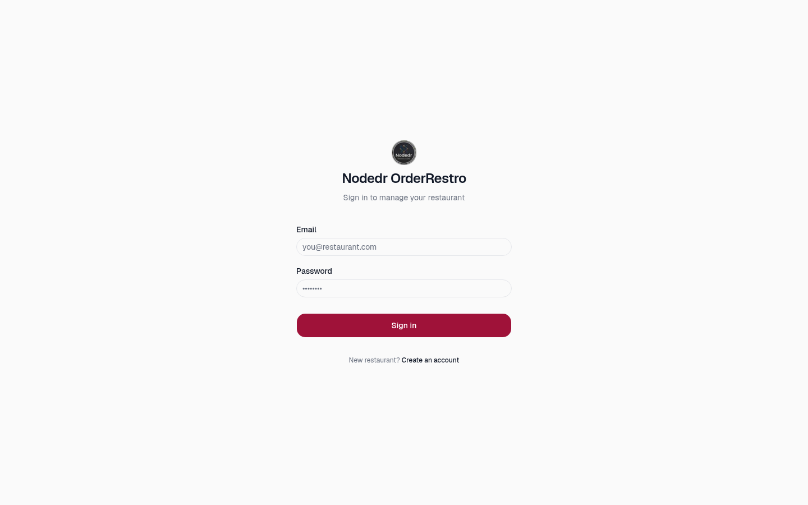
The sign-in screen — email, password, and a link to create a new restaurant account.
Staff working directly at a POS terminal can also sign in with a short numeric PIN instead of typing an email and password every shift, once an Owner/Administrator has set one up for their account from Settings > Staff.
3. Dashboard
The Dashboard is the first screen after signing in — a real-time summary of how the shift is going.
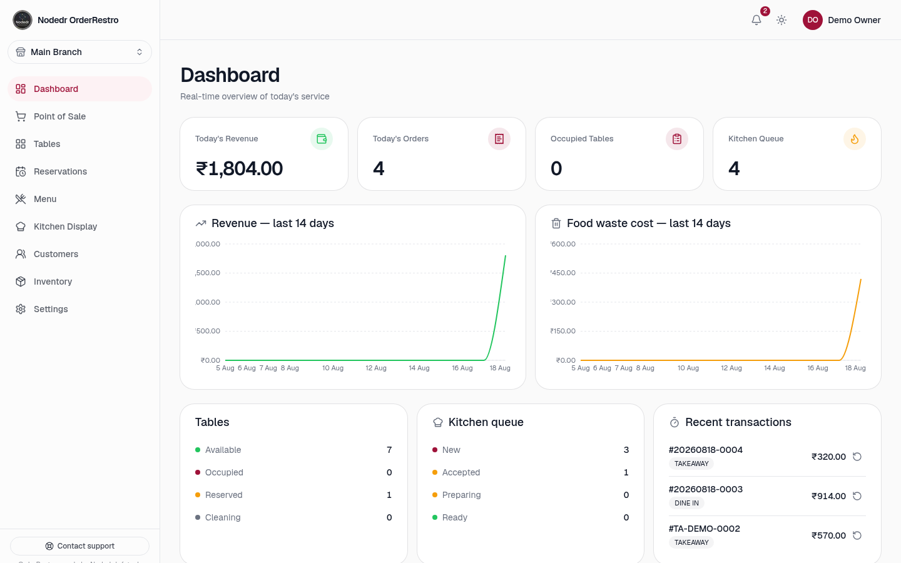
Dashboard after some activity — revenue, orders, table and kitchen status all update live.
What each part shows:
Today's Revenue / Today's Orders / Occupied Tables / Kitchen Queue — four stat tiles at the top, refreshed automatically (table and kitchen counts push live; revenue/orders currently refresh on a short poll, not push).
Revenue — last 14 days chart — a quick trend line so you can spot an unusually slow or busy day at a glance.
Food waste cost — last 14 days — pulls from the Waste log in Inventory (Section 12.5); shows "No waste logged" until you log at least one entry.
Tables panel — a live count of Available / Occupied / Reserved / Cleaning tables, mirroring the Tables page.
Kitchen queue panel — a live count of tickets in each KOT status (New / Accepted / Preparing / Ready).
Recent transactions — the latest paid orders, with a quick link to reprint each receipt.
4. Menu management
The Menu page is where you build out what customers can order — categories, items, prices, tax rates, kitchen routing, and modifiers.
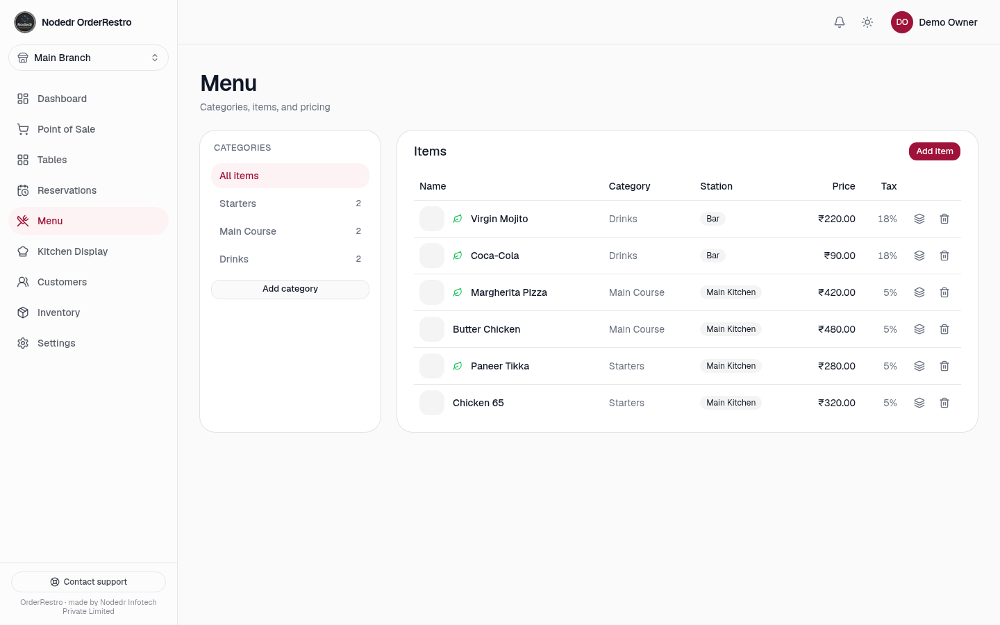
Menu > Items — a categories sidebar on the left, the full item list with price and tax on the right.
Where to click
Add category (top of the Categories panel) — creates a new tab like "Starters" or "Drinks"; click any category chip to filter the items table to just that category, or All items to see everything.
Add item (top-right of the Items panel) — opens the New menu item dialog.
Each row's rightmost icons are Combo components (the layers icon — see below) and an edit icon to change that item's details.
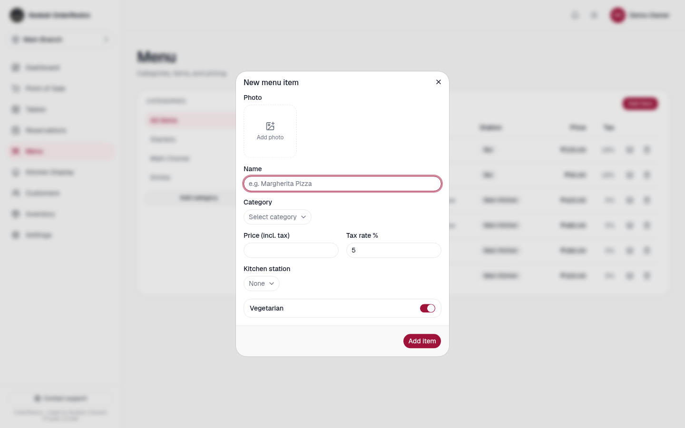
Add item — name, category, price (tax-inclusive), tax rate, kitchen station, and a Vegetarian toggle.
Fields on a menu item:
Field
What it controls
Photo
Optional image shown in the POS product grid and the public QR menu.
Name / Category
Basic identity and which category tab it appears under.
Price (incl. tax)
The one price customers see — tax is calculated out of this number at checkout, never added on top.
Tax rate %
Used to back the tax amount out of the inclusive price on every bill.
Kitchen station
Which KOT/KDS station (e.g. Main Kitchen, Bar) this item's tickets print to.
Vegetarian
Drives the veg/non-veg indicator shown in the POS grid and the public QR menu.
4.1 Modifier groups (item customization)
A modifier group (like "Crust Type" or "Spice Level") is a set of choices attached to a menu item. Each modifier can carry its own price adjustment, and a group can require a minimum/maximum number of selections and mark one option as the pre-selected default. Once a modifier group is attached to an item, the POS shows a picker dialog the moment you tap that item (Section 6.2).
4.2 Combo meals
Any menu item can be turned into a combo by giving it components — other menu items it's made of, each with its own quantity. The combo still sells at its own flat price; the components are informational and kitchen-facing (they don't create separate line items on the bill).
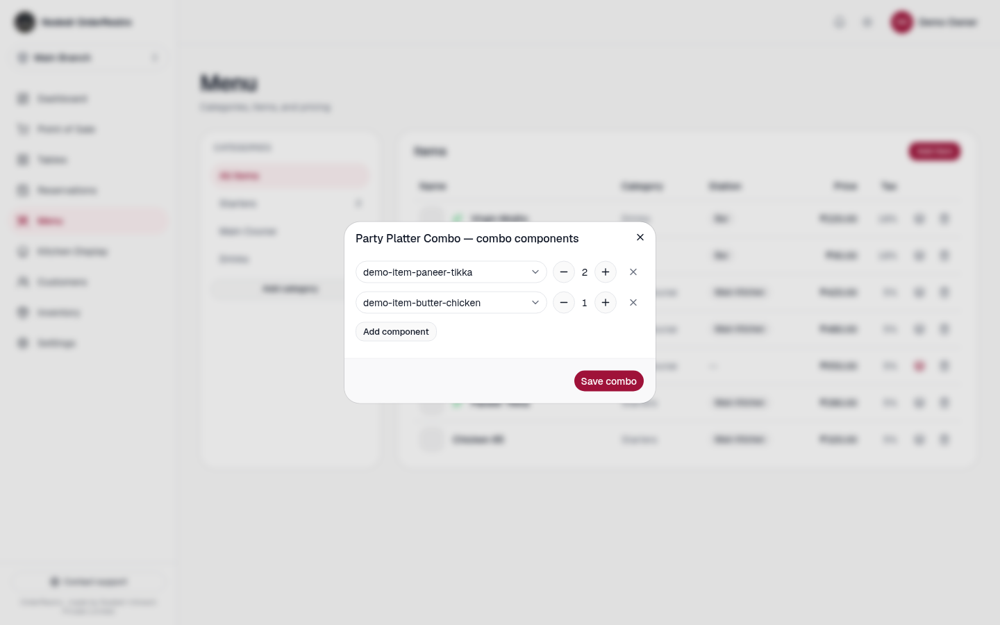
Combo components — click the layers icon on any item row to open this, add each component item and its quantity, then Save combo.
How to build a combo
Create the combo's own menu item first (e.g. "Party Platter Combo") with its bundle price.
Click the Combo components (layers) icon on that item's row.
Click Add component, pick a menu item from the dropdown, and set its quantity. Repeat for every item in the bundle.
Click Save combo. The item now shows "isCombo" behavior automatically — no separate flag to remember.
5. Tables & floors
The Tables page is your live floor plan — every table's current status, plus the walk-in waitlist.
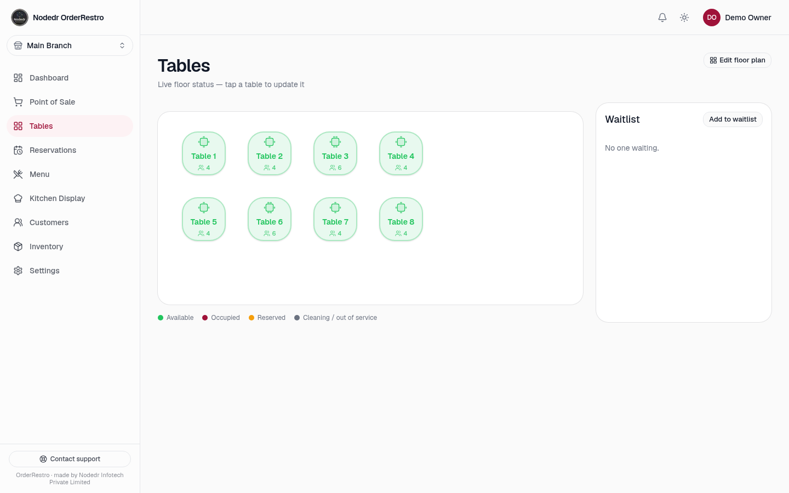
Tables — each tile is color-coded by status; tap one to change it or take an action.
Table colors: green = Available, a warmer color = Occupied, another = Reserved, and a neutral tone for Cleaning/out-of-service — the legend beneath the floor confirms which is which in your theme.
Where to click
Tap any table tile to open its status menu.
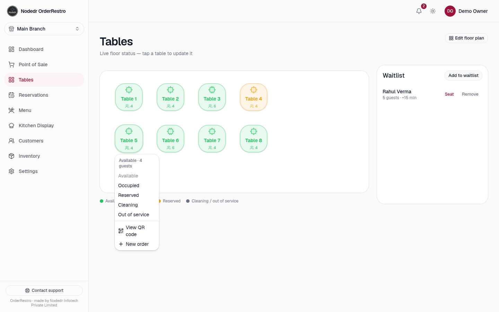
Tapping a table opens: change status (Available/Occupied/Reserved/Cleaning/Out of service), View QR code, or New order.
Change status — click any status in the menu to set it directly (useful for marking a table Cleaning after guests leave, or Out of service for a broken chair).
View QR code — see Section 10.
New order — jumps straight to the POS with this table pre-selected.
5.1 Waitlist
The Waitlist panel on the right of the Tables page holds walk-in guests who don't have a table yet.
Waitlist — name, party size, and quoted wait time; Seat assigns a table, Remove clears the entry.
Where to click
Click Add to waitlist, enter the guest's name, party size, quoted wait (minutes), and optionally a phone number, then Add.
When a table frees up, click Seat next to their name — this assigns them a table and marks it Occupied in one step.
Remove clears an entry that was cancelled or left before being seated.
Scope note: the floor plan shows tables at fixed seeded positions today — there isn't yet an in-app drag-and-drop editor to rearrange tile positions, even though the "Edit floor plan" button is present.
6. Taking orders (Point of Sale)
The POS screen is where every order — dine-in or takeaway — actually gets built and sent to the kitchen.
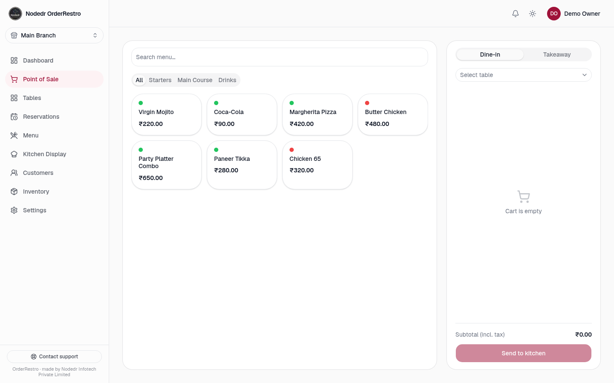
POS — search and category tabs on the left, order type / table picker and cart on the right.
Where to click — starting an order
Choose Dine-in or Takeaway at the top of the right-hand panel.
For Dine-in, pick a table from the Select table dropdown — only then does the cart become active.
Use the category tabs (All / Starters / Main Course / Drinks…) or the search box to find items, then tap an item's tile to add it.
6.1 Modifiers at the POS
Tapping an item that has a modifier group attached opens a picker before it's added to the cart:
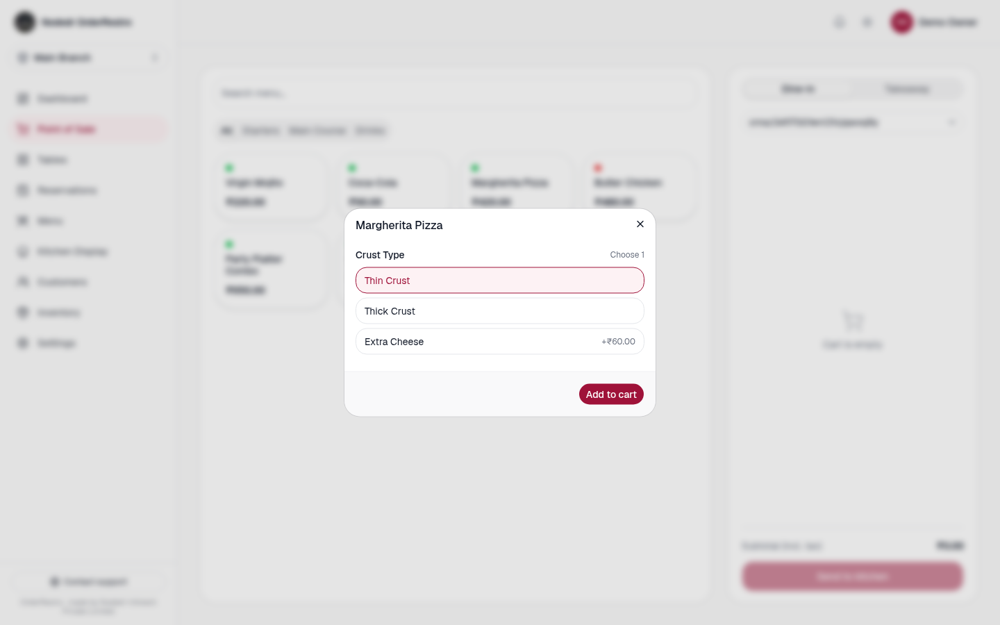
Modifier picker — "Choose 1" enforces the group's min/max rule; priced options show their add-on cost.
Pick the option(s) the group requires and click Add to cart. Plain items with no modifier group skip this dialog and add straight to the cart.
6.2 The cart
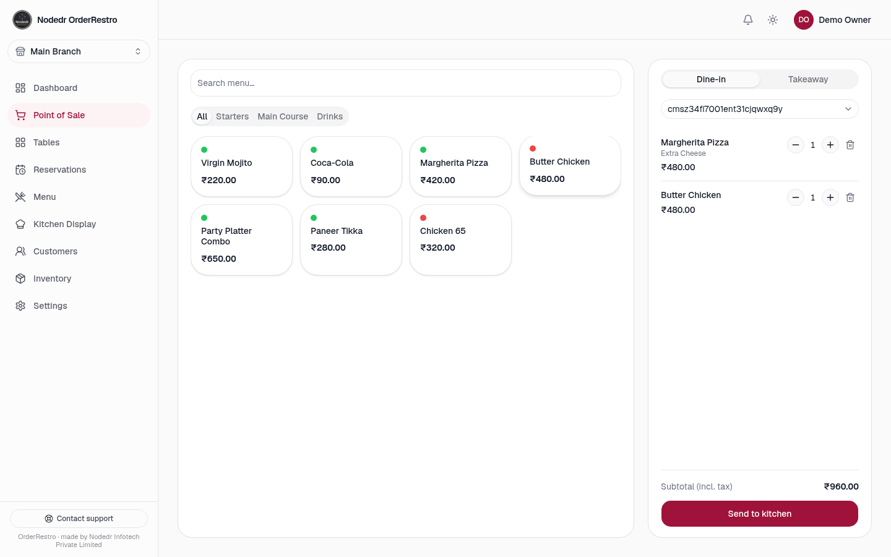
Cart — each line shows its modifiers, a quantity stepper, and a running subtotal (tax-inclusive) at the bottom.
Use the − / + steppers to change quantity, or the trash icon to remove a line entirely. When ready, click Send to kitchen — this creates the order, generates KOTs split by kitchen station, and moves you into the checkout panel (Section 8), where you don't have to collect payment immediately: tap Back to help another table and come bill this one later from here or the Tables page.
7. Kitchen Display & KOT
Every order sent to the kitchen becomes one or more KOTs (Kitchen Order Tickets), split automatically by kitchen station (e.g. a pizza and a mojito on the same order produce a Main Kitchen ticket and a Bar ticket). The Kitchen Display shows every open ticket in real time.
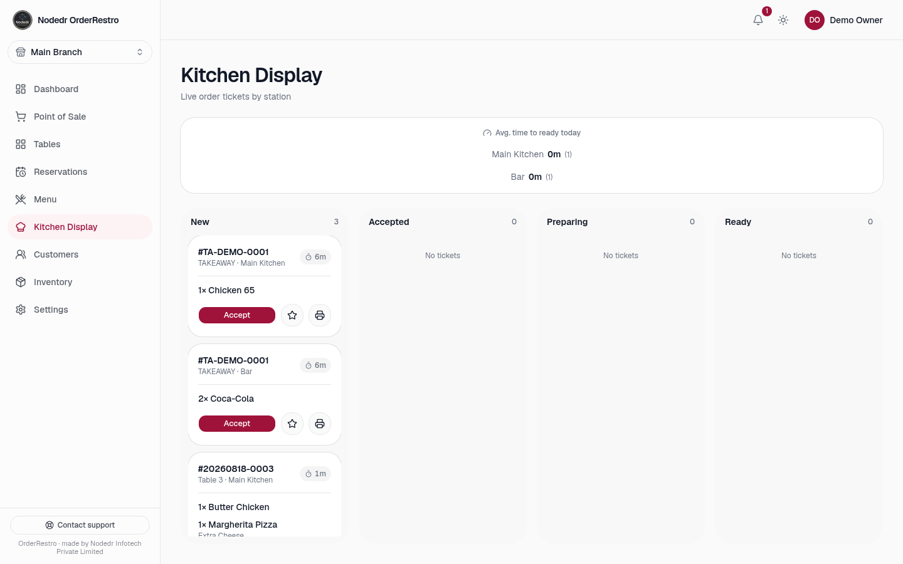
Kitchen Display — four columns (New / Accepted / Preparing / Ready), each ticket showing its items, elapsed time, and per-station average time-to-ready at the top.
Where to click, on each ticket
Accept (in New), then the same button relabels to move it Preparing, then Ready — a simple bump-forward action through the status flow.
Mark priority — puts a highlighted ring around the ticket, the same visual used for the automatic 15-minute delay warning, so the kitchen knows to jump it in the queue.
Reprint ticket — reprints the same KOT, incrementing its printed-count (useful if the kitchen printer jammed or a copy got lost).
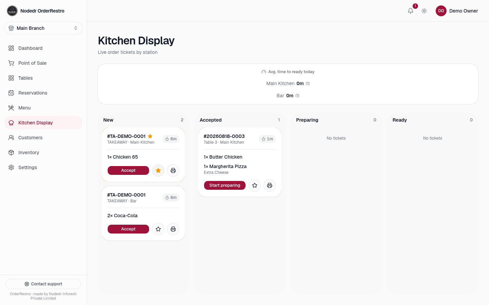
After clicking Accept, the ticket moves into the Accepted column and the priority ring is visible on the marked ticket.
The board updates for every kitchen screen the moment any ticket changes status anywhere — no manual refresh needed.
Scope note: columns are grouped by ticket status, not by kitchen station — each ticket does show which station it belongs to, but there's no separate per-station tab yet if you run more than one kitchen screen.
8. Checkout & billing
Once an order has been sent to the kitchen, the same screen becomes the checkout panel — reachable any time from the Tables page (tap the table > New order) or straight from an in-progress POS session.
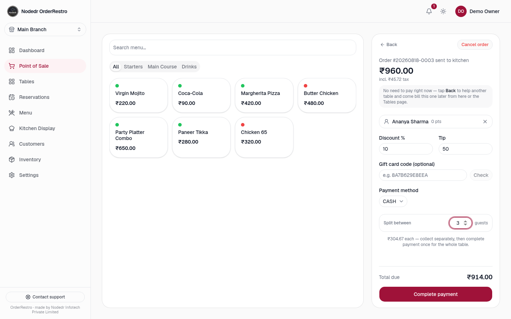
Checkout — customer attached, a 10% discount and ₹50 tip applied, and the bill split three ways.
Where to click
Attach customer — type a name or phone number to search existing customers and tap the match, or New customer to create one inline without leaving checkout. This links the order to their profile for loyalty points and order history (Section 11).
Discount % — a percentage knocked off the subtotal before tax recalculation.
Tip — added on top of the discounted subtotal; tip is never taxed.
Gift card code — type a code and click Check to validate and apply it as a payment source (Section 11.2).
Payment method — Cash / Card / UPI / Wallet.
Split between (guests) — a display-only calculator: it shows each guest's even share so the cashier can collect cash from each person, but it still produces one single paid order and one receipt, not separate per-guest checks.
Complete payment — finalizes the order as PAID.
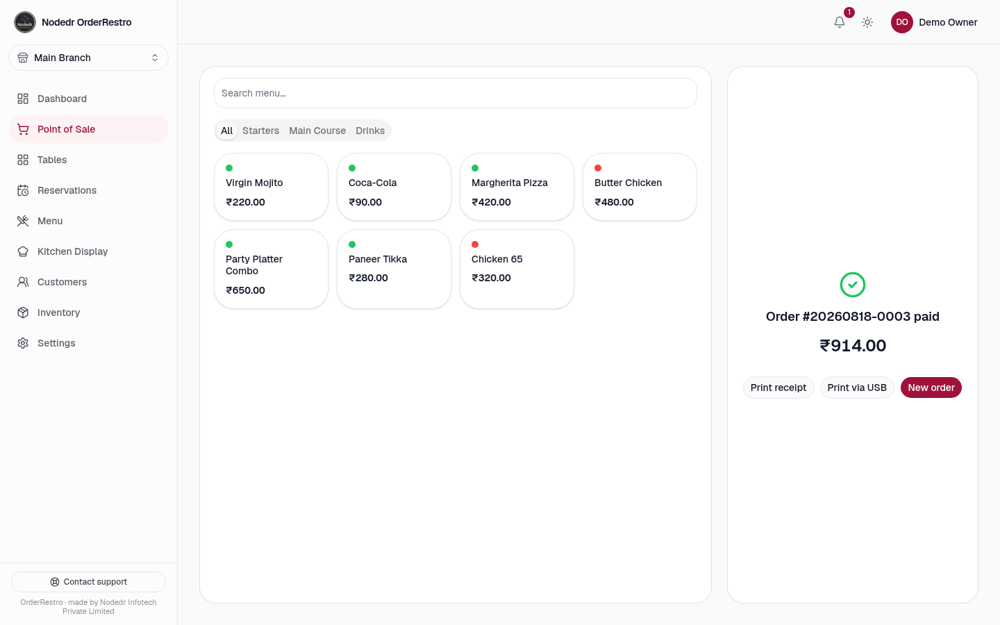
After payment: Print receipt (browser print dialog, works with any printer or "Save as PDF"), Print via USB (direct ESC/POS thermal printer, Linux hosts), or start a New order.
8.1 Refunds and merging orders
From a paid order's detail view, a refund can be issued up to whatever hasn't already been refunded on that order — never more — with an optional store-credit payout that credits the customer's wallet instead of cash. Two open dine-in orders can also be merged into one: their items and KOTs move together, the subtotal and tax recompute, the source order is cancelled, and its table is released.
9. Reservations & waitlist
The Reservations page lists every upcoming booking across all floors.
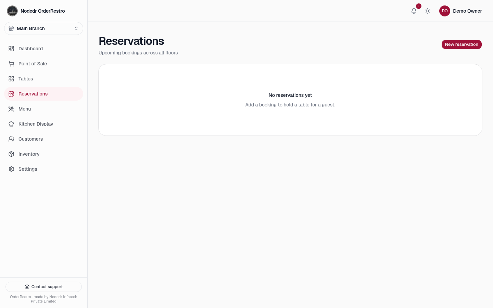
Reservations — empty state before any bookings exist.
Where to click
Click New reservation.
Fill in the guest's name, phone, party size, date & time, optionally assign a specific table, and any special requests (e.g. "window seat, birthday").
Click Save reservation.
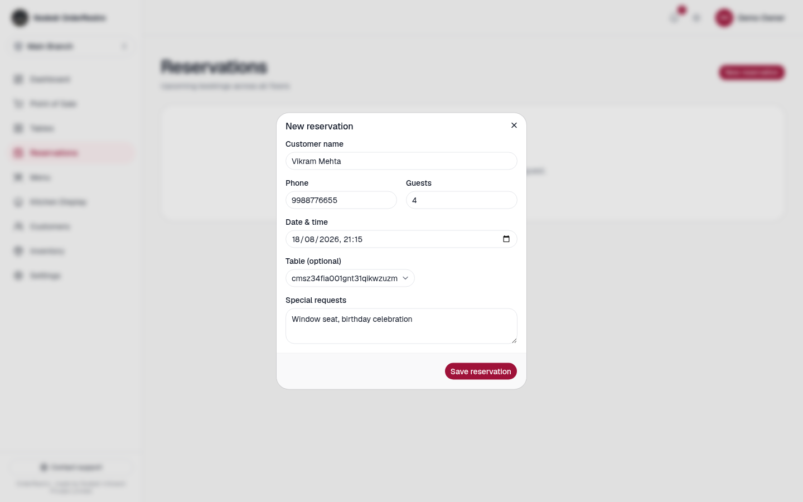
New reservation — table assignment is optional; leave it blank to decide closer to the booking time.
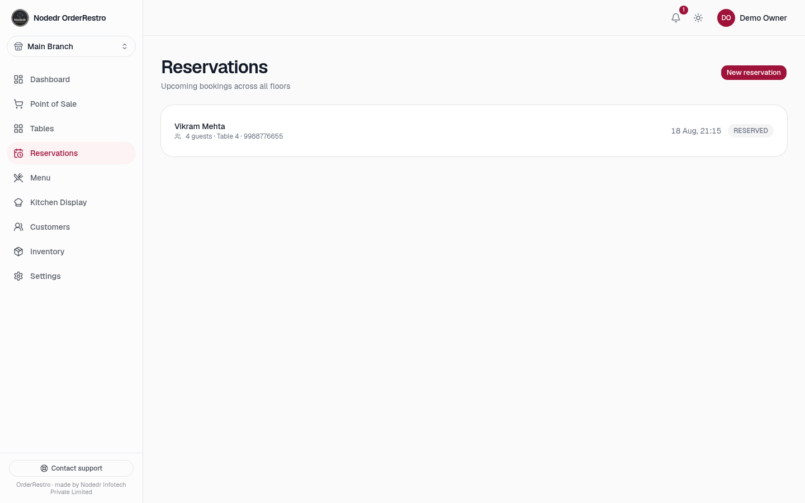
A saved reservation shows the guest, party size, assigned table, phone, date/time, and its current status badge.
9.1 Reservation status flow
Click the status badge on any reservation to move it through its lifecycle:
Assigning a table on creation marks that table Reserved; moving the reservation to Arrived occupies the table; any terminal status (Completed, Cancelled, No-show) releases the table back to Available automatically — you don't need to separately update the Tables page.
A quoted deposit field exists on the reservation record for future use, but there's no payment-collection UI for it yet — treat it as a note field for now, not a real charge.
10. QR table ordering
Every table can have its own QR code, generated from the table's status menu on the Tables page (Section 5).
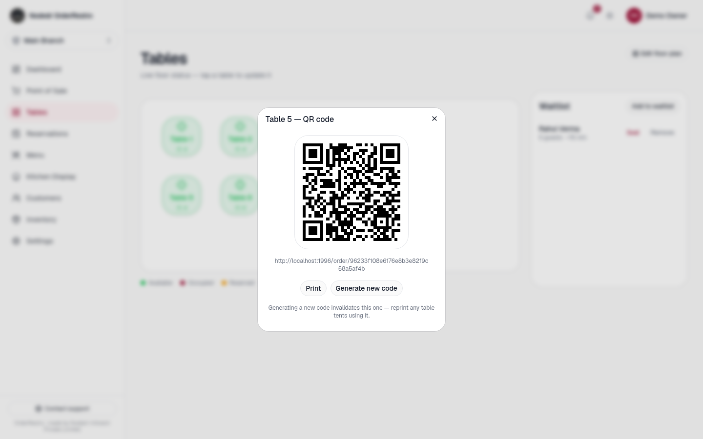
View QR code > Generate QR code — gives you a printable link and a Print button for table tents.
Where to click
On any table, open its status menu and click View QR code.
If none exists yet, click Generate QR code.
Click Print to print a table tent, or Generate new code to invalidate the old one and issue a fresh link (do this if a tent is lost or you suspect the code has been shared beyond that table).
Scanning the code (or opening the printed link) takes a guest to a public, unauthenticated menu view scoped to that table — no login required:
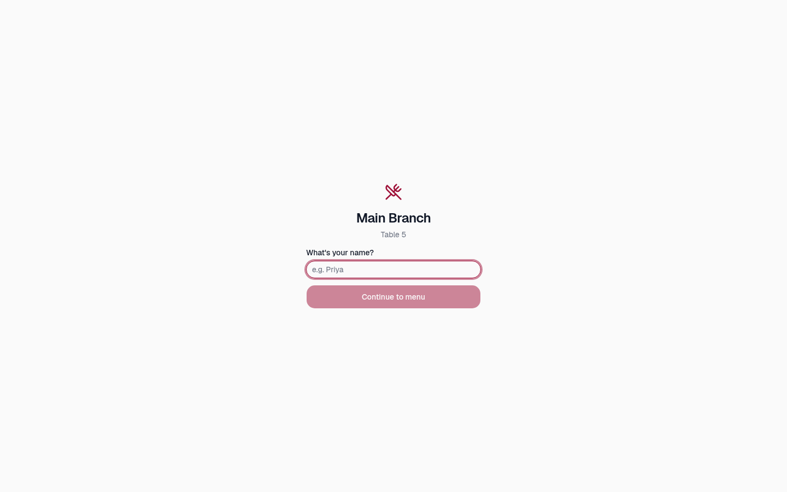
The public table menu — categories, items, prices, and the veg/non-veg indicator, read-only.
Scope note: today this is a read-only menu — a guest can browse it on their phone, but cannot place an order, customize items, request the waiter, or ask for the bill from this screen yet. Full self-service QR ordering is planned but not built; a staff member still has to take the order via the POS.
11. Customers, loyalty & gift cards
The Customers page is your CRM — every guest's contact info, loyalty balance, gift cards, and order history in one place.
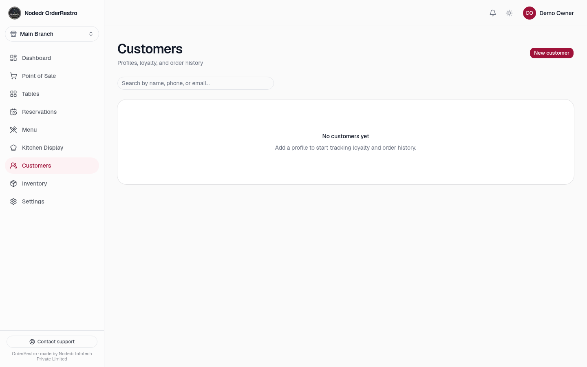
Customers — empty state, with search and New customer.
Where to click
Click New customer, fill in name, phone, and email, then Add customer.
Alternatively, attach a customer to an order directly from POS checkout (Section 8) — typing a new name there also offers a New customer shortcut inline.
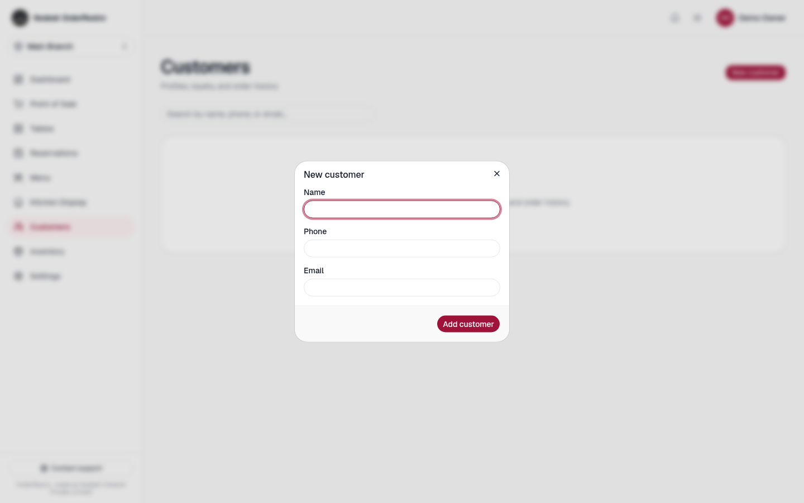
New customer — just name, phone, and email to start (address, birthday, anniversary and allergy notes can be added from their profile).
Click any customer's row to open their profile:
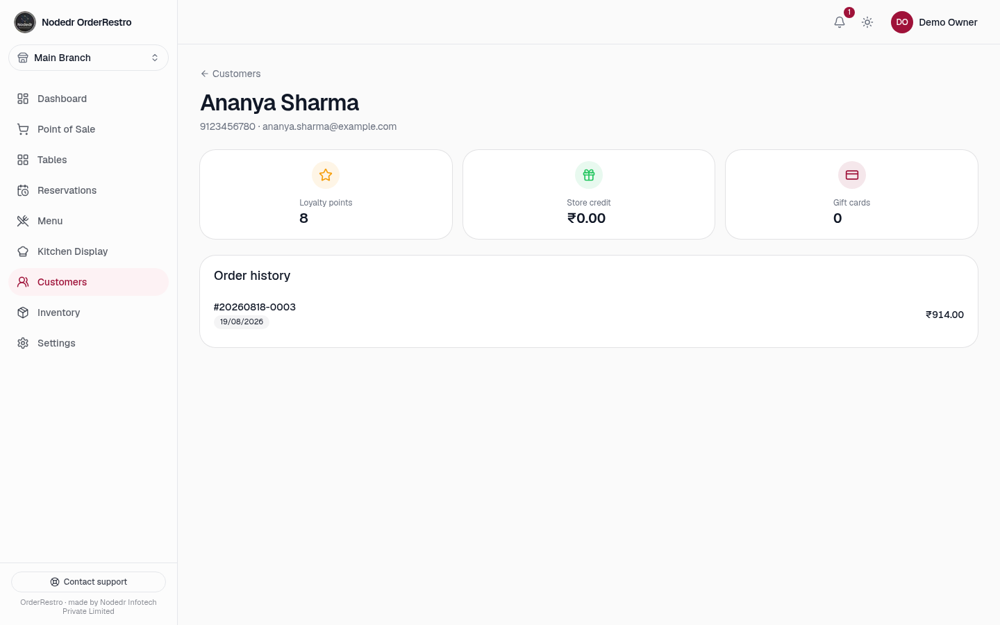
Customer profile — loyalty points, store credit, gift card count, and full order history.
11.1 Loyalty points
By default, a customer earns 1 point per ₹100 of net spend (excluding tip, rounded down), and 1 point redeems for ₹1 off a future bill — configurable per restaurant from Settings > General (Section 13). Redemption is capped at both the customer's actual balance and the bill total, so it can never take a bill negative. Points post automatically the moment an order attached to that customer is paid — nothing to click.
11.2 Gift cards
A gift card is a random code with its own balance that can be spent as a payment source at checkout, debiting only up to what's left owed on the bill and never more than its remaining balance.
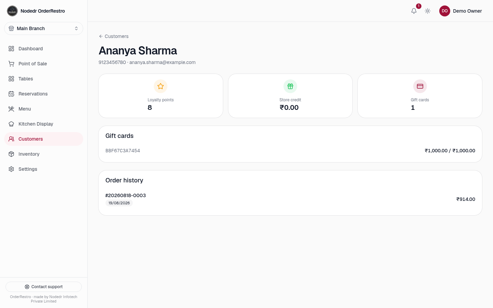
Once a gift card exists for a customer, it appears here with its code, balance, and issue date.
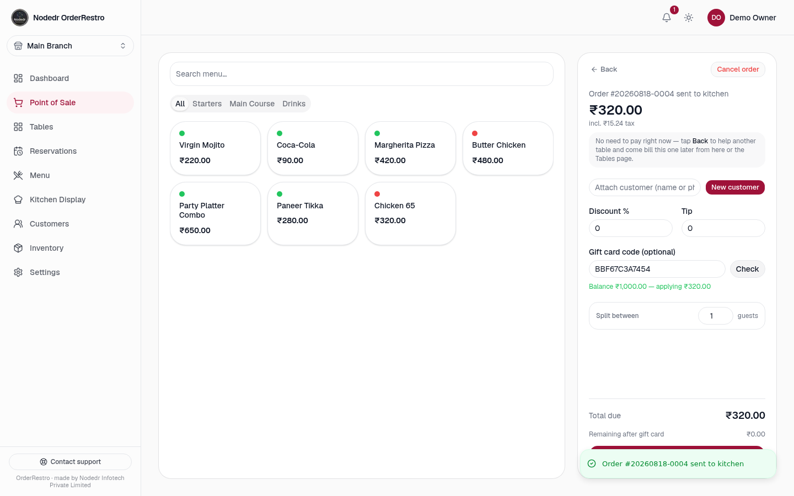
At checkout: type the code into "Gift card code" and click Check — a valid card is applied toward the total due.
Scope note: redemption at checkout is fully built and shown above, but there is currently no button anywhere in the app to issue a new gift card — the customer profile only displays cards that already exist. Issuing one today requires calling the backend API directly (POST /api/v1/gift-cards) rather than clicking through the UI; a front-end "Issue gift card" action would need to be added for staff to do this without developer help.
11.3 Store credit
Store credit is a customer's running wallet balance, currently populated only as an optional payout when processing a refund (Section 8.1) — there's no direct "add store credit" action either, mirroring the gift-card gap above.
12. Inventory & procurement
The Inventory section tracks raw ingredients from purchase through to the plate — suppliers, purchase orders, goods receipt, stock levels, recipe costing, and waste. It has five tabs.
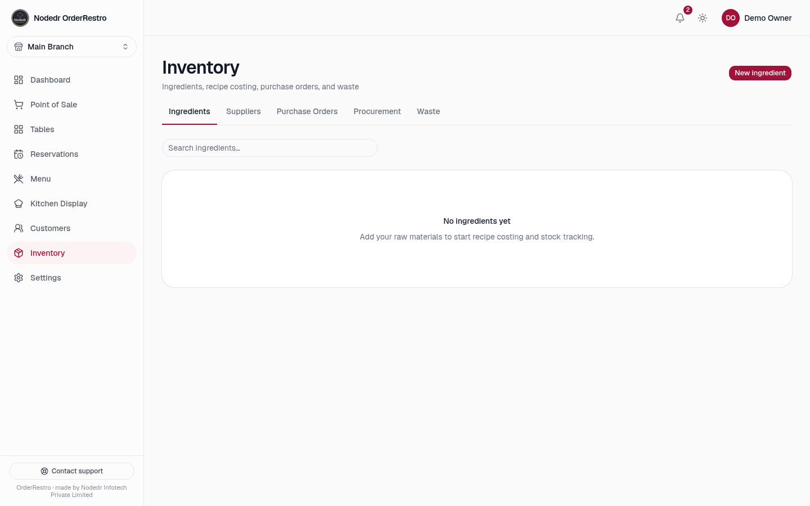
Inventory's five tabs: Ingredients, Suppliers, Purchase Orders, Procurement, Waste.
12.1 Suppliers
Where to click
Go to the Suppliers tab, click New supplier.
Enter the business name, a contact person, phone, and email, then Add supplier.
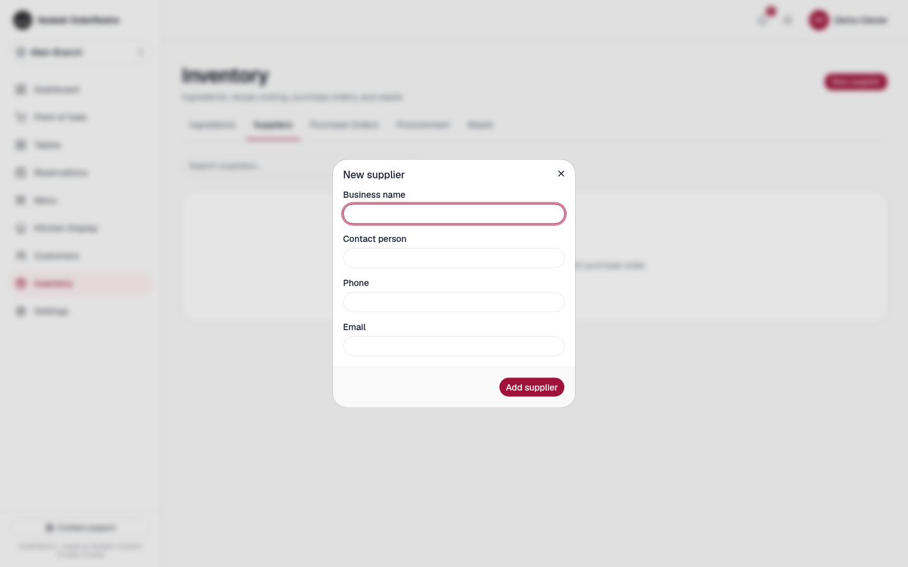
New supplier — business name, contact person, phone, email.
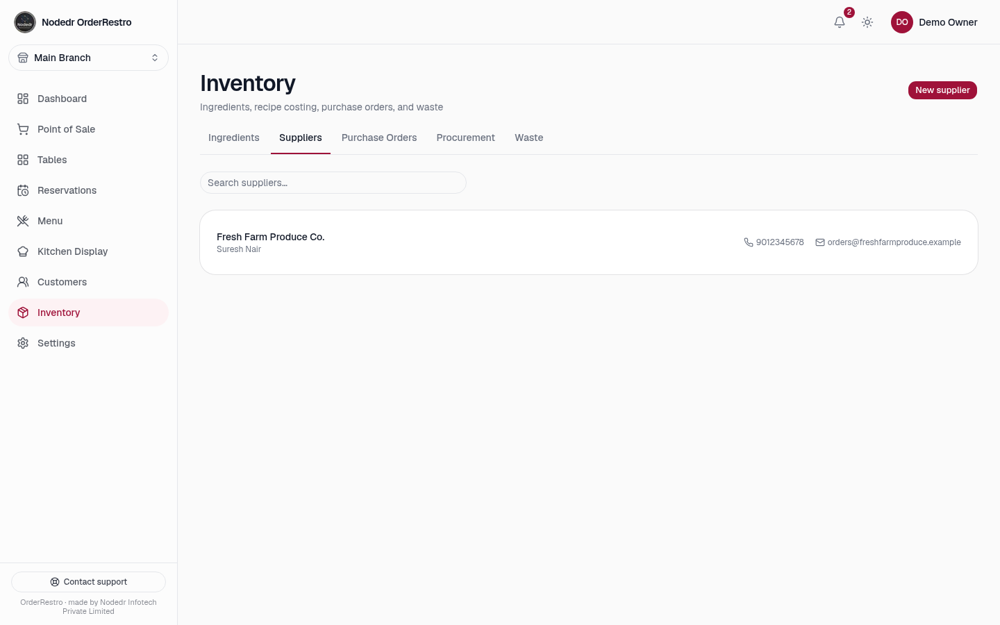
The supplier directory — every supplier you buy from lives here before you can raise a purchase order against them.
12.2 Ingredients
Where to click
On the Ingredients tab, click New ingredient.
Enter a name, pick a unit (KG, litre, piece, etc.), and set a reorder level — the ingredient shows a "Low stock" badge once on-hand quantity falls to or below this.
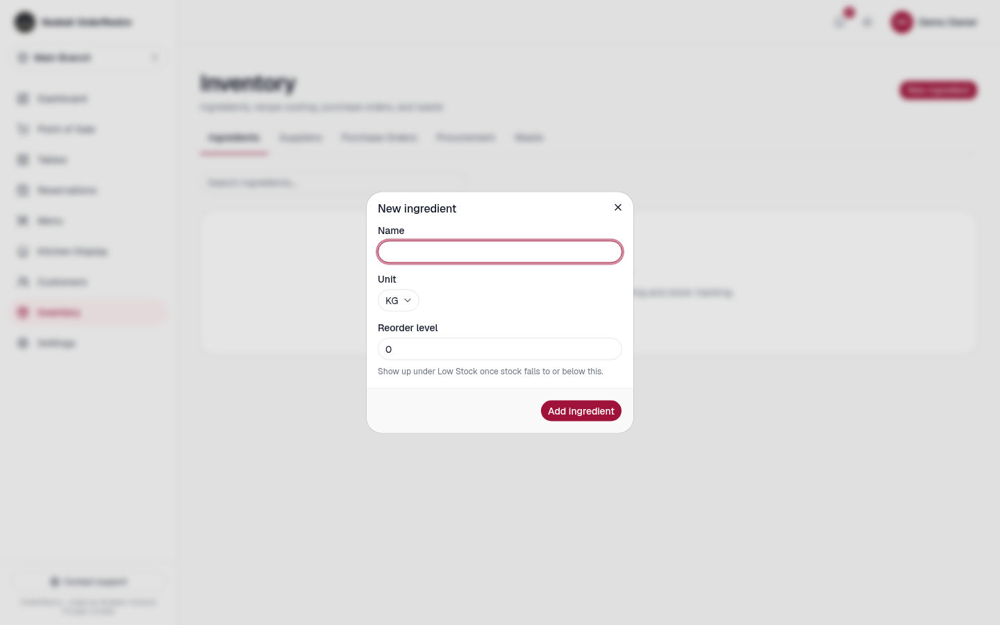
New ingredient — name, unit, and reorder level.
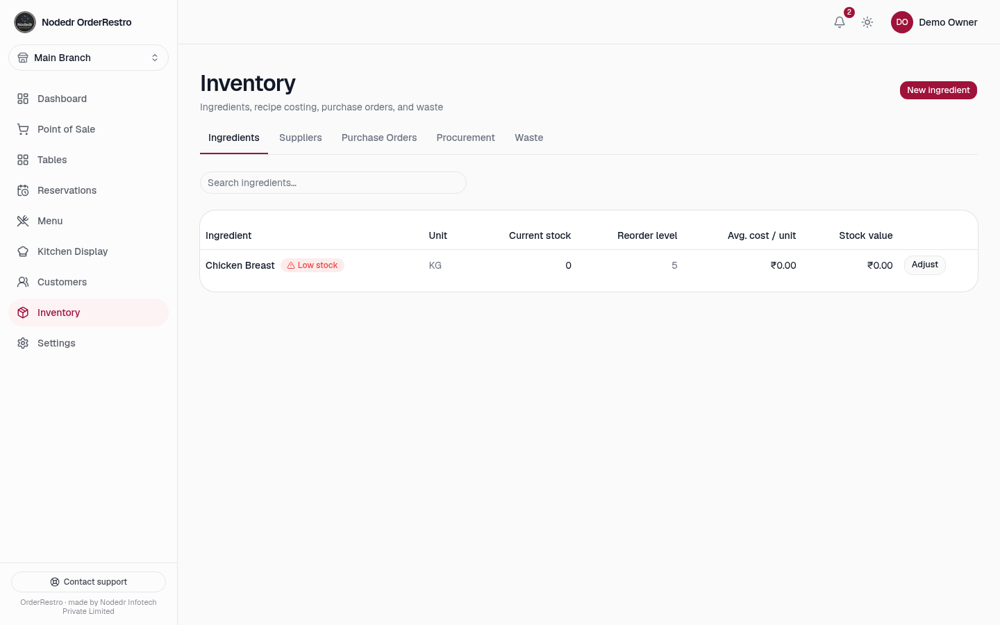
A freshly created ingredient starts at zero stock and immediately flags Low stock until a goods receipt brings it above the reorder level.
Each row's Adjust button opens a manual stock correction (for a stocktake mismatch, breakage not worth a formal waste entry, etc.) — every adjustment is ledgered, not a silent overwrite. Average cost per unit recalculates automatically as a weighted average every time new stock is received.
12.3 Purchase orders
Where to click — raising and receiving a PO
On the Purchase Orders tab, click New purchase order.
Pick a Supplier, then for each line: pick an ingredient, enter Qty and Cost/unit, and click Add item (repeat for more lines). The running total updates as you go.
Click Create purchase order — it's created as DRAFT.
On the PO's detail page, click Mark as sent once you've actually placed the order with the supplier — this reveals the Receive items action.
When goods arrive, click Receive items, enter what actually arrived (quantity and cost can differ from what was ordered — enter the real numbers), optionally an expiry date, and click Record goods receipt.
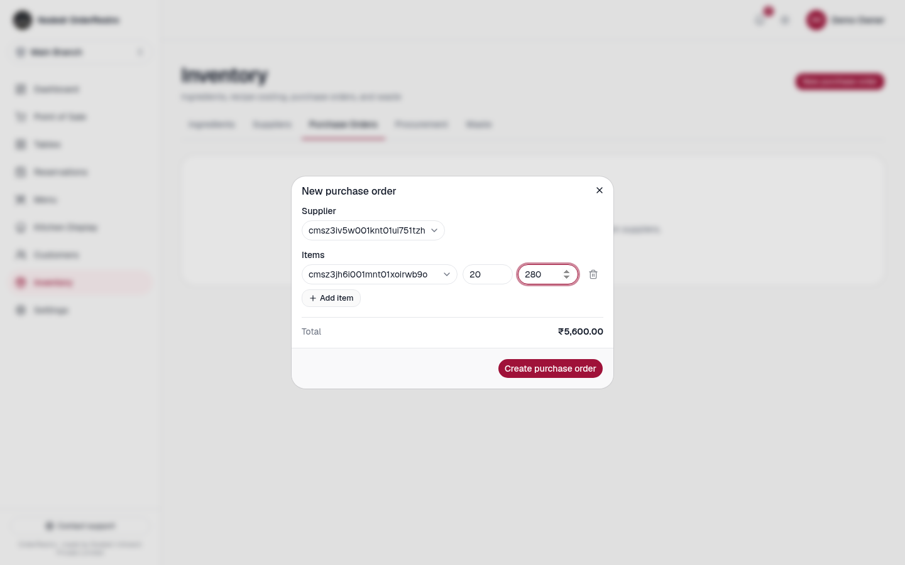
New purchase order — supplier, then one row per ingredient with quantity and cost.
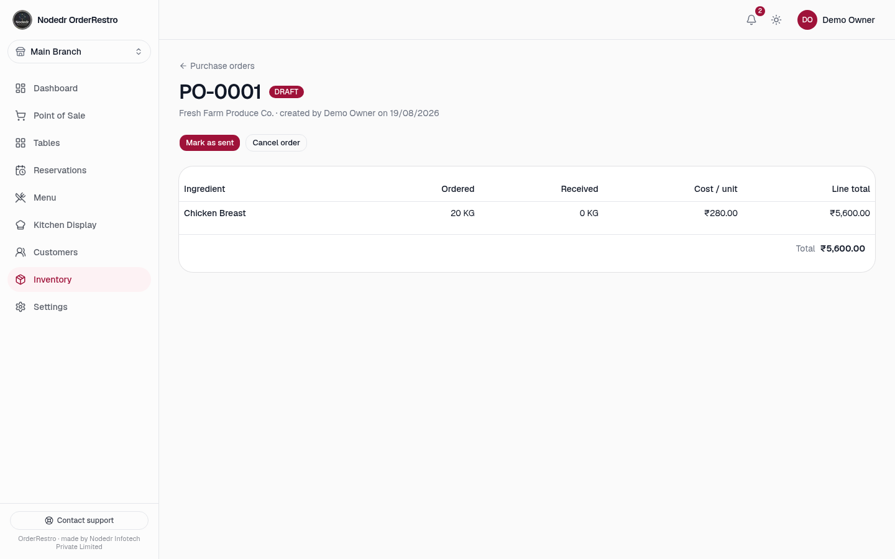
PO detail page — sequential PO number, line items, and the current status badge.
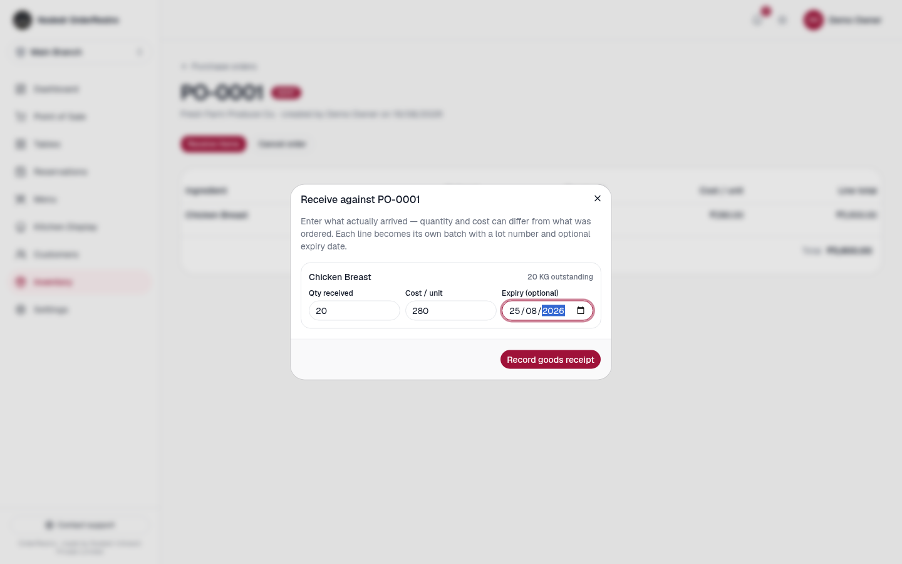
Receive against a PO — each line becomes its own batch with a lot number and optional expiry date, supporting FIFO costing later.
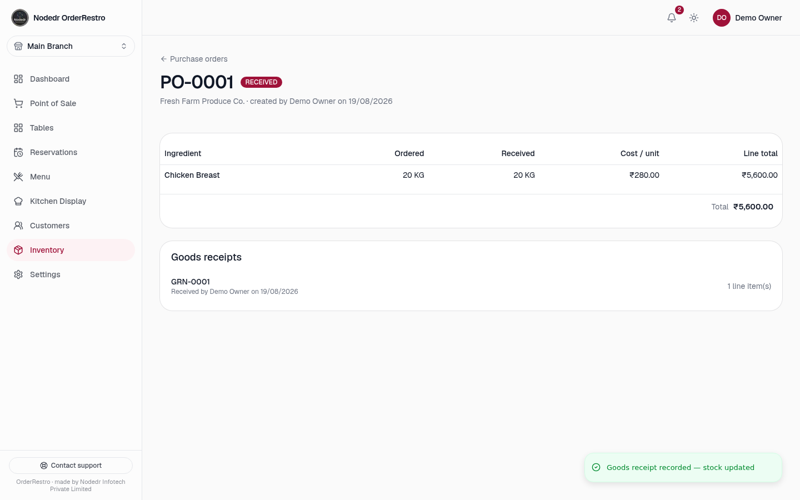
After receiving, the PO's Received column updates and the ingredient's on-hand stock and average cost recalculate immediately.
A PO moves through Draft → Sent → Partially received → Received (or Cancelled), with sequential PO numbers (PO-0001, PO-0002…) for easy reference with suppliers.
Beyond a simple PO, the Procurement tab adds three deeper tools for larger operations:
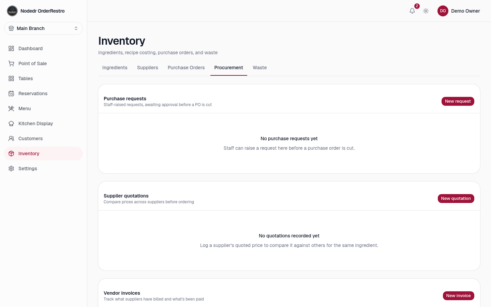
Procurement — Purchase requests, Supplier quotations, and Vendor invoices, each with its own list and a New… button.
Purchase requests
Lets any staff member flag "we're running low on X" before a manager actually commits to a purchase order — a lightweight approval step for larger kitchens with more than one buyer.
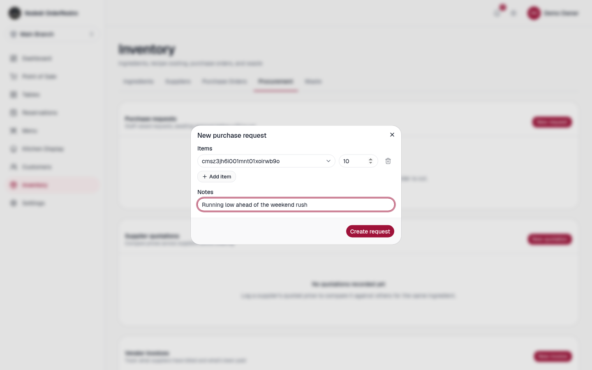
New request — pick ingredient(s) and quantity, add a note, and it's logged as a sequential request (PR-0001…) for a manager to action.
Supplier quotations
Records what a supplier has quoted for an ingredient, so you can compare prices across two or three suppliers side by side before committing to a PO.
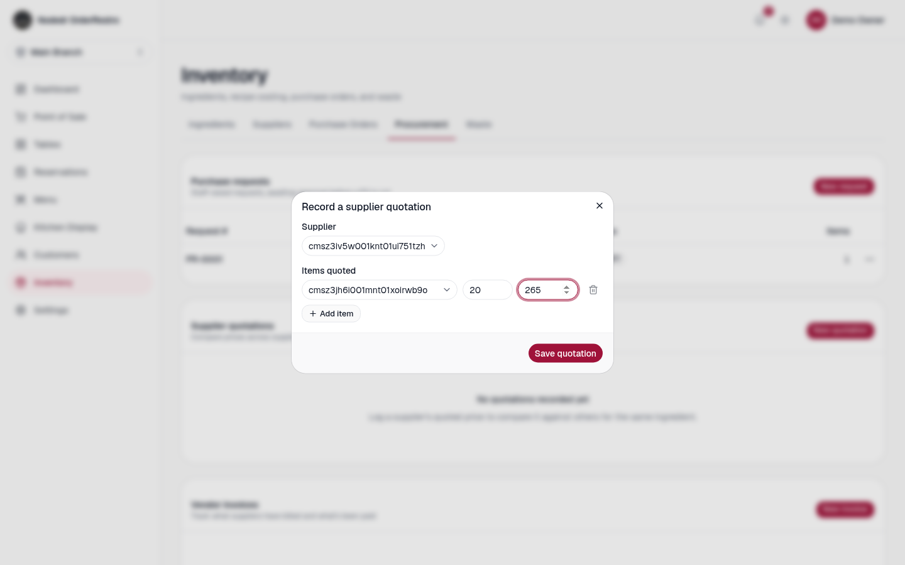
New quotation — supplier, ingredient, quantity, and quoted price/unit; saved as QT-0001 etc.
Vendor invoices & payments
Tracks what a supplier has actually billed you against a purchase order — separate from the PO itself, since invoices and payments often lag behind delivery.
Where to click
Click New invoice, pick the supplier, enter the invoice number, invoice date, due date, and total amount, then Add invoice.
The invoice appears as UNPAID. Click Record payment on its row any time money goes out — enter the amount (a partial payment is fine, it just reduces what's remaining), payment method, and an optional reference (UTR/cheque number), then Record payment.
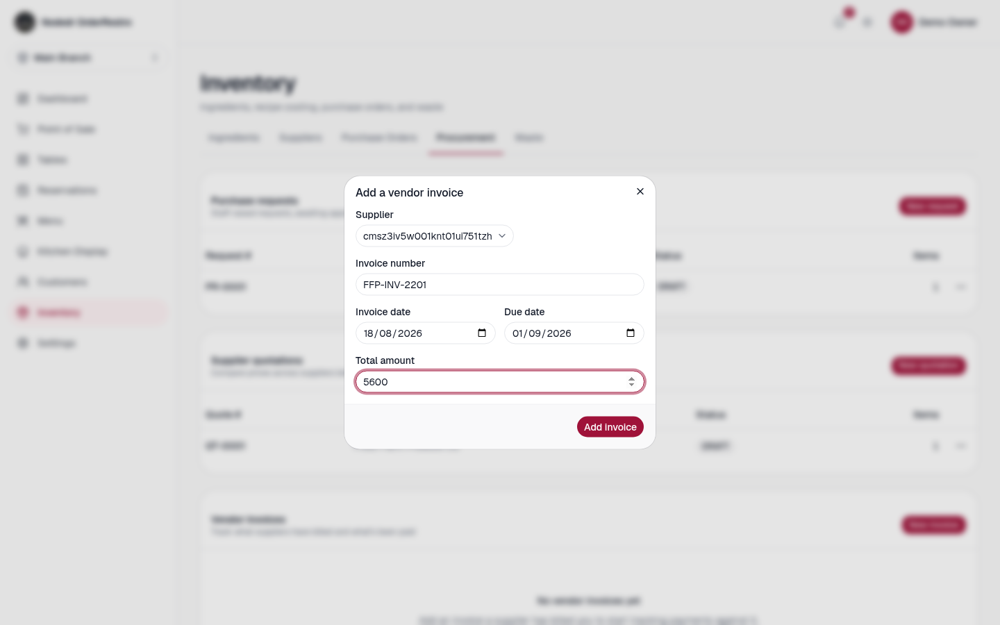
New vendor invoice — supplier, invoice number, dates, and total amount.
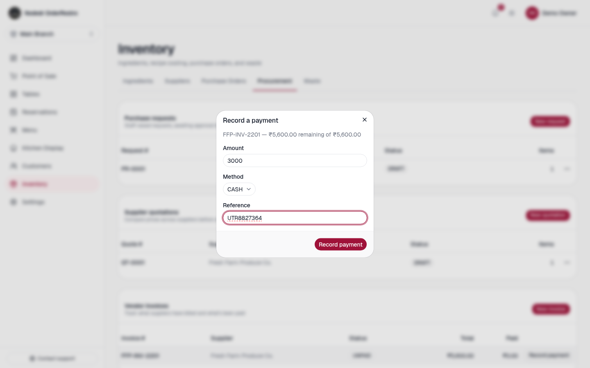
Record a payment — shows exactly how much of the invoice remains before you enter an amount.
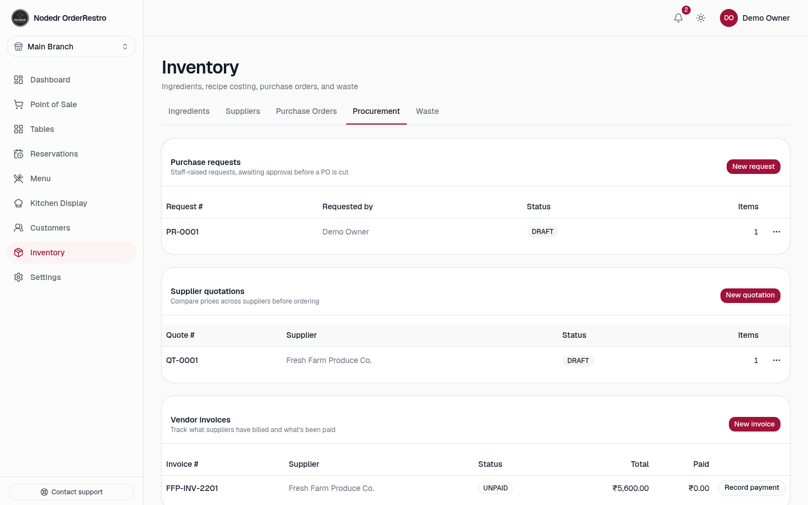
All three procurement lists populated — a purchase request, a supplier quotation, and a vendor invoice with its payment status.
12.5 Waste
Where to click
On the Waste tab, click Log waste.
Pick the ingredient (its current stock level is shown right in the dropdown), enter the quantity, pick a Reason (Spoiled, Damaged, Expired, etc.), and optionally add notes.
Click Log waste to save.
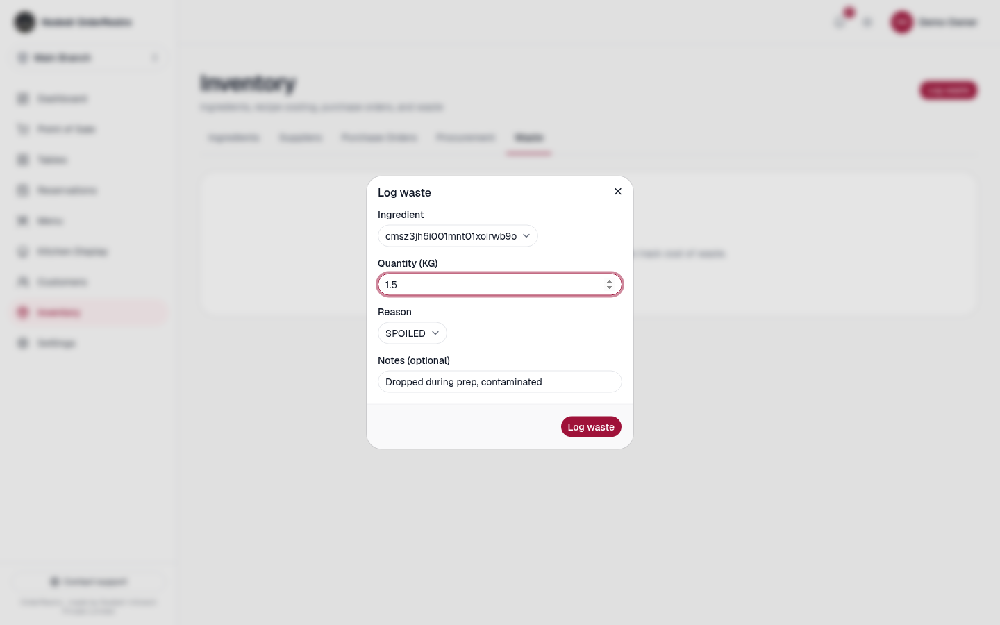
Log waste — the ingredient dropdown shows current stock so you can't accidentally over-log.
Waste is deducted FIFO from the oldest batch on hand and priced at that specific batch's own cost (not a blended average), so the waste-cost figure on the Dashboard (Section 3) reflects what that stock actually cost you.
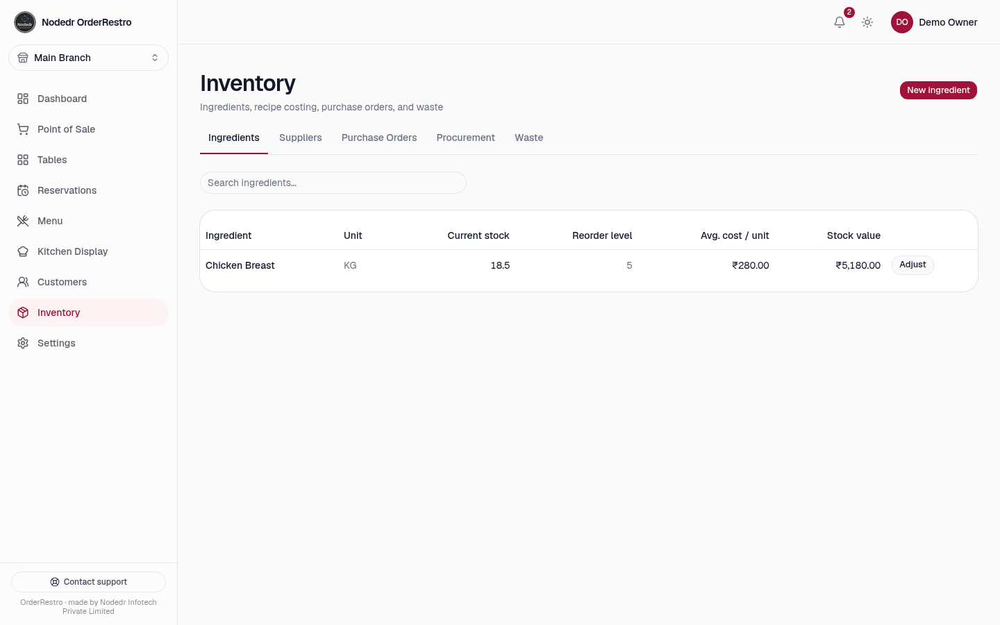
The full loop closed: an ingredient with real on-hand stock, an average cost, and a stock value — built up from a purchase order, a goods receipt, and a waste entry.
Recipe costing: beyond what's shown here, a menu item can declare the ingredient quantities it consumes (a "recipe"). Once linked, checkout automatically deducts the right amount of each ingredient's stock (FIFO, expanding one level into a combo's components first), and the item's cost price on the Menu page updates live from the ingredient's current average cost — useful for real food-cost tracking, though building the recipe link itself isn't captured in the screenshots above.
13. Settings — staff, roles & audit log
Settings has four tabs: General, Staff, Roles, and Audit Log.
13.1 General
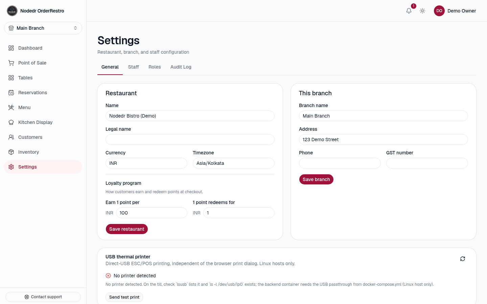
General — restaurant name/currency/timezone, loyalty program rates, this branch's details, and USB thermal printer status.
Restaurant — name, legal name, currency, timezone, and the loyalty program's earn/redeem rates (Section 11.1) — edit and click Save restaurant.
This branch — branch name, address, phone, GST number — click Save branch.
USB thermal printer — status of a direct-USB ESC/POS printer on Linux hosts, with a Send test print button. If none is detected, the panel tells you exactly what to check (lsusb, /dev/usb/lp0, the Docker USB passthrough).
13.2 Staff
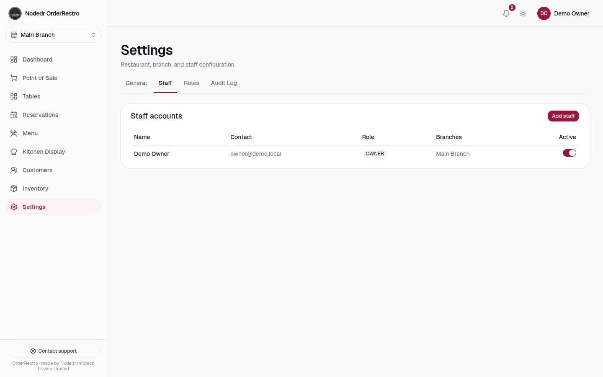
Staff accounts — name, contact, role, assigned branch(es), and an active/inactive toggle per row.
Where to click
Click Add staff.
Enter name, email, phone, and a password, pick a Role from the full list (Section 1's table), tick which branch(es) they work at, then Add staff.
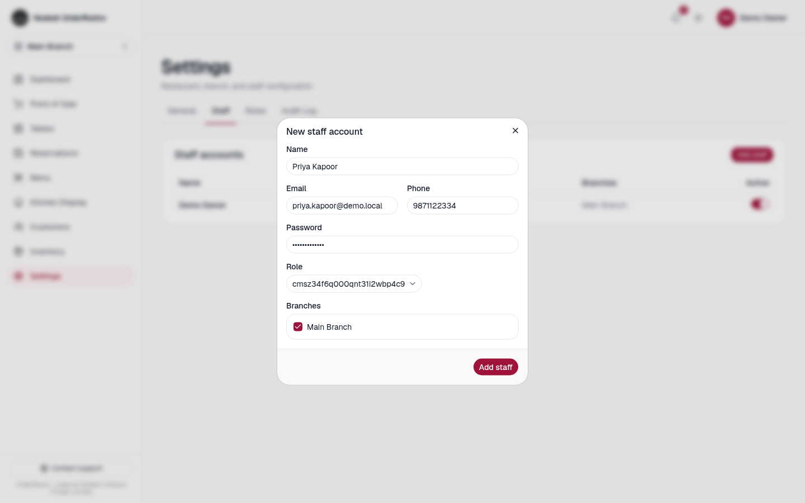
New staff account — every seeded role is selectable here.
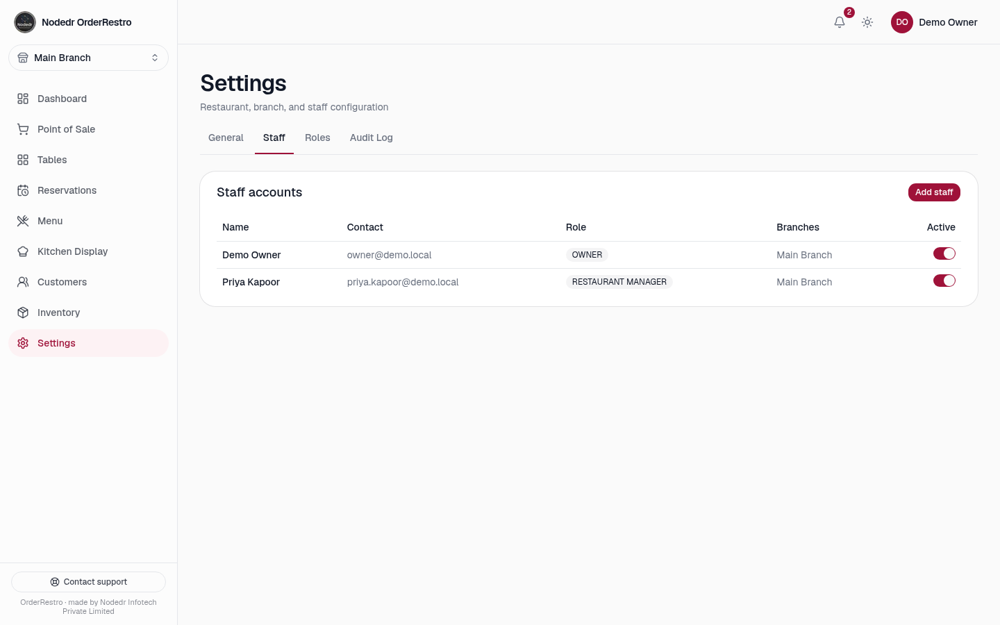
The switch in the Active column deactivates a login instantly without deleting the account or its history.
13.3 Roles & permissions
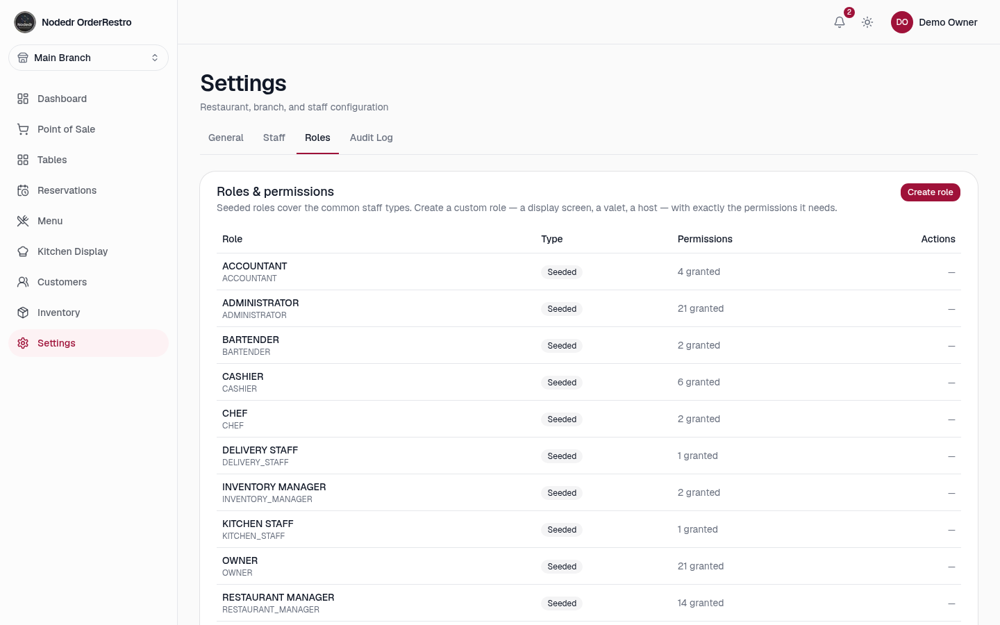
Every seeded role with its permission count — click Create role to build a custom one from scratch.
Click Create role to build something the seeded list doesn't cover — a kitchen display screen with no real login behind it, a valet, or a host who only needs the Reservations page — with exactly the permissions it needs, individually toggled, not a bundle you have to accept wholesale.
13.4 Audit Log
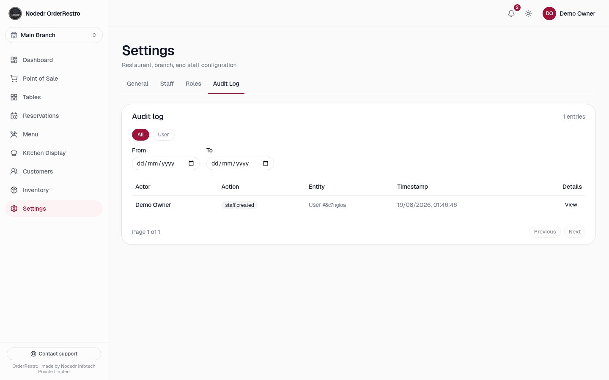
Audit Log (Owner only) — a filterable record of every sensitive action taken in the system, for accountability.